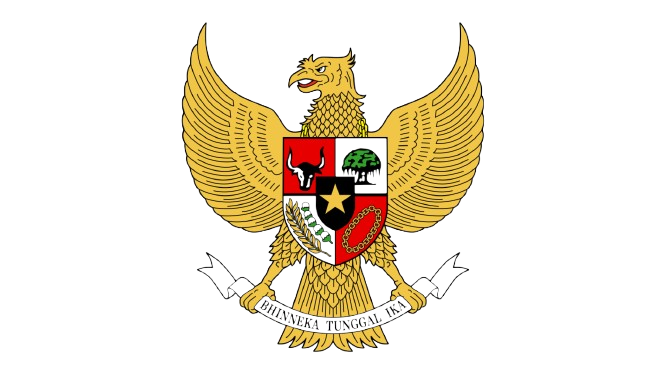

Sejarah Lambang garuda Pancasila
Lambang Garuda Pancasila lahir dari proses perancangan yang dimulai pasca-kemerdekaan, diprakarsai oleh Sultan Hamid II pada tahun 1950, dan didasarkan pada mitologi kuno serta simbolisme budaya Nusantara. Lambang ini melambangkan kekuatan dan kejayaan, dengan setiap bagiannya merepresentasikan tanggal kemerdekaan Indonesia (\(17\) Agustus \(1945\)